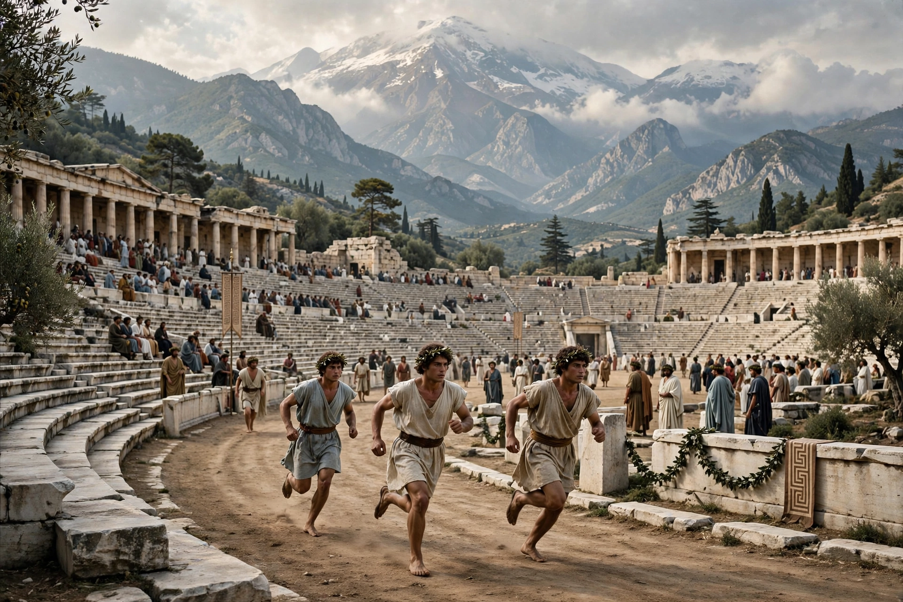

Panhellenic Games
The Panhellenic Games were four separate religious and athletic festivals held in ancient Greece, open to participants from all Greek city-states. Together they formed the circuit known as the periodos.
Panhellenic Games
Games: Olympic, Pythian, Nemean, Isthmian
Prize: Wreaths (olive, laurel, pine, celery)
Era: Archaic to Roman Greece
The four games
- Olympic Games at Olympia, in honour of Zeus, held every four years; prize an olive wreath.
- Pythian Games at Delphi, in honour of Apollo, every four years (two years after the Olympics); prize a laurel wreath; included musical contests.
- Nemean Games at Nemea, in honour of Zeus, every two years; prize a wreath of wild celery.
- Isthmian Games at the Isthmus of Corinth, in honour of Poseidon, every two years; prize a pine wreath.
The periodos
An athlete who won at all four festivals was honoured as a periodonikes, a circuit winner. Victors gained fame, statues and odes by poets such as Pindar. The games declined under Roman rule and were suppressed in late antiquity with the broader end of pagan festivals.
See also: Pankration, Ancient Greece